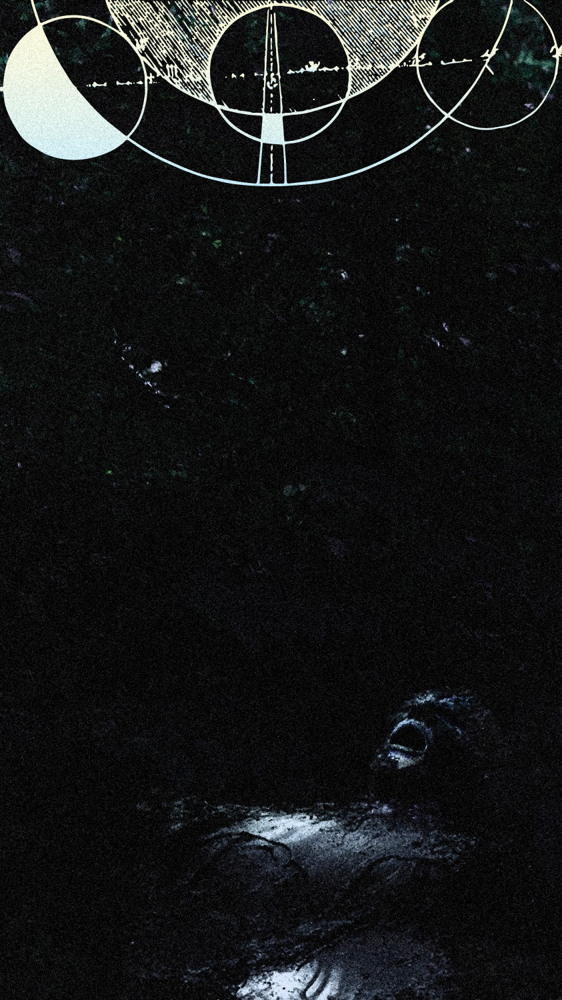

100000000000 animales (2022/24):
1era versión, para tres percusionistas y electrónica
escrita para line upon line
audio:
grabación en vivo (editada) del estreno por line upon line en CRASHBOX, Austin, Texas, 2024/04/26
grabada, mezclada y masterizada por mí

++++
Matt, Adam y Cullen, junto con 100000000000 almas, transforman energía latente en vida nueva, ascienden la escalera armónica de movimientos celestes. Desde una partícula única, dibujan el arquetipo de la fábrica de este Mundo:
Pues así como nuestros cuerpos sacan pelos por la piel,
así esta tierra saca plantas y árboles;
y así como piojos nacen de este pelo,
gusanos y chicharras nacen Aquí;
y así como nuestras caras vierten mocos y lágrimas y cera y saliva,
también de estas montañas manan ríos y magma, truenos y lluvia.
Pero este Mundo no es muy diferente a un toro o un jaguar, paciente para la ira pero poderoso,
y será tanto más violento entre más sea provocado.
Y entre hombres y ángeles, la bestia; mortal en cuerpo como los hombres, inmortal en mente como los ángeles.
Y entre el ámbito celestial de los que han sido bendecidos con la muerte y nuestra naturaleza sublunar—
este ciello estrellado.
* casi todo esto parafrasea a Kepler

++++